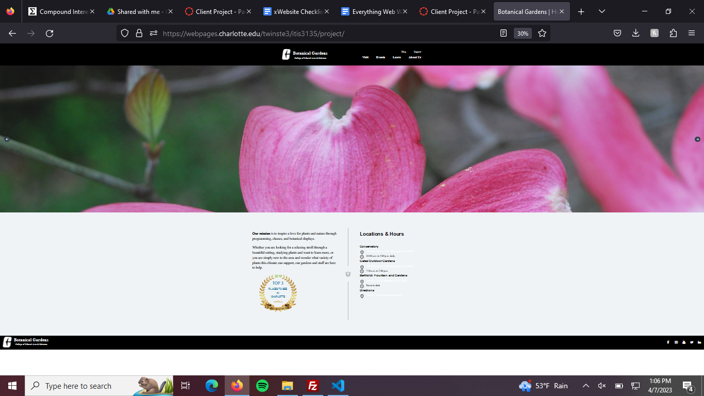

Peer Review 1: Winstead, Tyrell
Review Check list
- File/folder names, including scripts, images are written correctly (no spaces, caps).
- Page has mostly sufficient contrast/font sizing, main area of page has links with colors that blend in with the background.
- Page has site colors fonts, and scripts being used from seperate folder.
- Page also makes use of jQuery.
- The page follows CRAP (Constrast, Repitition, Alignment, Proximity).
- Page has Header, Main, Footer, and Navbar.
- Site has brand header.
- Everything is clearly labeled on the site, making it easy to traverse.
- Website contains icons to click on, leading to social medias for client.
- Navigation bar uses pure white and black color, however main area of page does not.
- Links use colors other than blue and purple and fit the theme of the site.
- Image used for home page matches the overall theme of the site.
- Main page is only page with content.